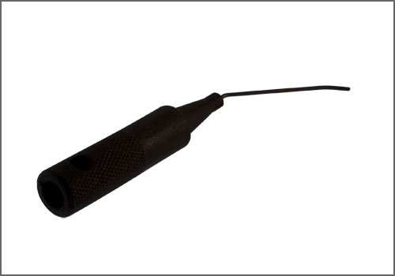

Ignition Switch Lock Cylinder: Tools and Equipment
BMW Lock Cylinder Tool
AST tool# 323110

Used for unlocking lock cylinder in steering wheel lock during removal.
- Made in Germany
- Call AST for Pricing
Contact AST for pricing.
Assenmacher Specialty Tools
1-800-525-2943